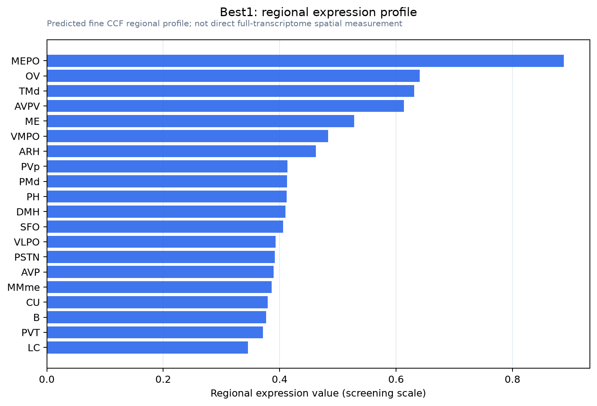

Best1
Bestrophin-1 (Vitelliform macular dystrophy protein 2 homolog)
Spatial tier: REGION_BIASED · Class: ION_CHANNEL · Top region: MEPO (Median preoptic nucleus) · Positive regions: 32/554
43.3Discovery Score
38.1Targetability Score
CEvidence grade C
What this means: Best1: fine CCF profile is region-biased toward MEPO (top regions: MEPO, OV, TMd, AVPV, ME); this is a discovery lead, not direct proof.
Direct spatial evidence
MERFISH REGION LOCATOR

Regional expression figure

Predicted WMB × fine-CCF profile; not direct full-transcriptome spatial measurement.
Spatial profile
Evidence and specificity
- Evidence status
- PREDICTED_FINE
- Direct sources
- None; predicted localization only
- Exclusive threshold
- 12 positive regions out of 554
- Spatial specificity
- 0.315
- Top-region fraction
- 0.055
- Filter status
- PASS
Interpretation limits
- Cell-type-to-region projection is imputed expression, not direct spatial measurement.
- Adult reference atlases do not establish stability across age, sex, strain, state, or disease.
- Transcript abundance does not guarantee protein abundance or genetic-tool performance.